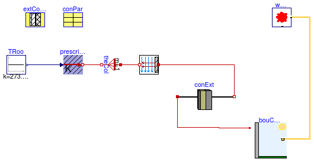
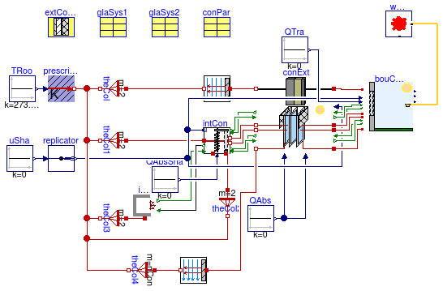
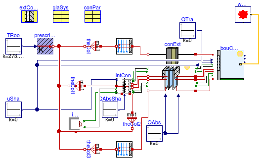

Collection of models that illustrate model use and test models
Information
This package contains examples for the use of models that can be found in
Buildings.Rooms.Constructions.
Extends from Modelica.Icons.ExamplesPackage (Icon for packages containing runnable examples).
Package Content
Test model for an exterior wall without a window

Information
This model tests the exterior construction without windows.
Extends from Modelica.Icons.Example (Icon for runnable examples).
Parameters
Modelica definition
model ExteriorWall
"Test model for an exterior wall without a window"
extends Modelica.Icons.Example;
parameter HeatTransfer.Data.OpaqueConstructions.Insulation100Concrete200 extConMat
"Record for material layers";
parameter Buildings.Rooms.BaseClasses.ParameterConstruction conPar[1](
each til=Buildings.Types.Tilt.Wall,
each azi=0,
each A=3*10,
layers={extConMat})
"Data for construction";
Buildings.Rooms.Constructions.Construction conExt[1](
A=conPar[:].A,
layers=conPar[:].layers,
til={Buildings.Types.Tilt.Wall})
"Construction of an exterior wall without a window";
Buildings.Rooms.BaseClasses.ExteriorBoundaryConditions bouConExt(
nCon=1,
linearizeRadiation = false,
conMod=Buildings.HeatTransfer.Types.ExteriorConvection.TemperatureWind,
lat=0.73268921998722,
conPar=conPar)
"Exterior boundary conditions for constructions without a window";
Buildings.HeatTransfer.Sources.PrescribedTemperature prescribedTemperature;
Buildings.HeatTransfer.Convection.Interior con[
1](A={3*10}, til={Buildings.Types.Tilt.Wall})
"Model for heat convection";
Modelica.Thermal.HeatTransfer.Components.ThermalCollector theCol(m=1)
"Thermal collector to link a vector of models to a single model";
BoundaryConditions.WeatherData.ReaderTMY3 weaDat(filNam=
"modelica://Buildings/Resources/weatherdata/USA_IL_Chicago-OHare.Intl.AP.725300_TMY3.mos");
Modelica.Blocks.Sources.Constant TRoo(k=273.15 + 20)
"Room air temperature";
equation
connect(prescribedTemperature.port, theCol.port_b);
connect(theCol.port_a, con.fluid);
connect(weaDat.weaBus, bouConExt.weaBus);
connect(TRoo.y, prescribedTemperature.T);
connect(con.solid, conExt.opa_b);
connect(bouConExt.opa_a, conExt.opa_a);
end ExteriorWall;
Test model for an exterior wall with two windows, one having a shade, the other not

Information
This model tests the exterior construction with two windows.
Extends from Modelica.Icons.Example (Icon for runnable examples).
Parameters
| Type | Name | Default | Description |
|---|
| Integer | nCon | 2 | Number of constructions |
| Area | A[:] | {3*10,3*10} | Heat transfer area of wall and window [m2] |
| Length | hWin[:] | {2,1} | Window height [m] |
| Length | wWin[:] | {3,3} | Window width [m] |
| Area | AWin[:] | hWin .* wWin | Heat transfer area of frame and window [m2] |
| Real | fFra[:] | {0.1,0.1} | Fraction of window frame divided by total window area |
| Boolean | linearizeRadiation | false | Set to true to linearize emissive power |
| DoubleClearAir13Clear | glaSys1 | | Record for glazing system |
| DoubleClearAir13Clear | glaSys2 | | Record for glazing system |
| ParameterConstructionWithWindow | conPar[nCon] | | Construction parameters |
| Insulation100Concrete200 | extConMat | | Record for material layers |
Modelica definition
model ExteriorWallTwoWindows
"Test model for an exterior wall with two windows, one having a shade, the other not"
extends Modelica.Icons.Example;
parameter Integer nCon = 2
"Number of constructions";
parameter Modelica.SIunits.Area A[:]={3*10, 3*10}
"Heat transfer area of wall and window";
parameter Modelica.SIunits.Length hWin[:] = {2, 1}
"Window height";
parameter Modelica.SIunits.Length wWin[:] = {3, 3}
"Window width";
parameter Modelica.SIunits.Area AWin[:]= hWin .* wWin
"Heat transfer area of frame and window";
parameter Real fFra[:]={0.1, 0.1}
"Fraction of window frame divided by total window area";
parameter Boolean linearizeRadiation = false
"Set to true to linearize emissive power";
parameter HeatTransfer.Data.GlazingSystems.DoubleClearAir13Clear glaSys1(
UFra=2,
shade=
Buildings.HeatTransfer.Data.Shades.Gray(),
haveInteriorShade=false,
haveExteriorShade=false)
"Record for glazing system";
parameter HeatTransfer.Data.GlazingSystems.DoubleClearAir13Clear glaSys2(
UFra=2,
shade=
Buildings.HeatTransfer.Data.Shades.Gray(),
haveInteriorShade=false,
haveExteriorShade=false)
"Record for glazing system";
parameter Buildings.Rooms.BaseClasses.ParameterConstructionWithWindow conPar[nCon](
each layers = extConMat,
each til=Buildings.Types.Tilt.Wall,
each azi=0.017453292519943,
A=A,
hWin=hWin,
wWin=wWin,
glaSys = {glaSys1, glaSys2})
"Construction parameters";
parameter HeatTransfer.Data.OpaqueConstructions.Insulation100Concrete200 extConMat
"Record for material layers";
ConstructionWithWindow conExt[nCon](
layers=conPar[:].layers,
glaSys=conPar[:].glaSys,
linearizeRadiation = {linearizeRadiation, linearizeRadiation},
A=conPar[:].A,
AWin=conPar[:].hWin .* conPar[:].wWin,
fFra=conPar[:].fFra,
til=conPar[:].til)
"Construction of an exterior wall with a window";
Buildings.Rooms.BaseClasses.ExteriorBoundaryConditionsWithWindow
bouConExt(
nCon=2,
linearizeRadiation = false,
conMod=Buildings.HeatTransfer.Types.ExteriorConvection.Fixed,
lat=0.73268921998722,
conPar=conPar)
"Exterior boundary conditions for constructions with a window";
Buildings.HeatTransfer.Sources.FixedTemperature TRoo(T=293.15)
"Room temperature";
Buildings.HeatTransfer.Convection.Interior con[nCon](A=A - AWin,
til={Buildings.Types.Tilt.Wall,
Buildings.Types.Tilt.Wall})
"Model for heat convection";
Modelica.Thermal.HeatTransfer.Components.ThermalCollector theCol(m=2)
"Thermal collector to link a vector of models to a single model";
BoundaryConditions.WeatherData.ReaderTMY3 weaDat(filNam=
"modelica://Buildings/Resources/weatherdata/USA_IL_Chicago-OHare.Intl.AP.725300_TMY3.mos");
Modelica.Blocks.Sources.Constant uSha(k=0)
"Shading control signal";
Modelica.Thermal.HeatTransfer.Components.ThermalCollector theCol1(m=2)
"Thermal collector to link a vector of models to a single model";
HeatTransfer.Radiosity.IndoorRadiosity indRad[nCon](
each linearize = linearizeRadiation,
A=AWin)
"Model for indoor radiosity";
Modelica.Blocks.Routing.Replicator replicator(nout=nCon);
Modelica.Thermal.HeatTransfer.Components.ThermalCollector theCol3(
m=2)
"Thermal collector to link a vector of models to a single model";
Modelica.Blocks.Sources.Constant QAbsSha[nCon](
each k=0)
"Solar radiation absorbed by interior shade";
Modelica.Blocks.Sources.Constant QAbs[nCon,
size(glaSys1.glass, 1)](
each k=0)
"Solar radiation absorbed by glass";
Modelica.Blocks.Sources.Constant QTra[nCon](
each k=0)
"Solar radiation absorbed by exterior shade";
Buildings.HeatTransfer.Windows.BaseClasses.ShadeRadiation intShaRad[nCon](
thisSideHasShade={glaSys1.haveInteriorShade, glaSys2.haveInteriorShade},
each linearize=linearize,
absIR_air={glaSys1.shade.absIR_a, glaSys2.shade.absIR_a},
absIR_glass={glaSys1.shade.absIR_b, glaSys2.shade.absIR_b},
tauIR_air={glaSys1.shade.tauIR_a, glaSys2.shade.tauIR_a},
tauIR_glass={glaSys1.shade.tauIR_b, glaSys2.shade.tauIR_b},
A=AGla)
if
glaSys1.haveShade
or glaSys2.haveShade
"Interior shade radiation model";
Buildings.HeatTransfer.Windows.InteriorHeatTransferConvective intShaCon[nCon](
A=A,
fFra=fFra,
til=conPar[:].til,
haveExteriorShade={glaSys1.haveExteriorShade, glaSys2.haveExteriorShade},
haveInteriorShade={glaSys1.haveInteriorShade, glaSys2.haveInteriorShade})
"Model for interior shade heat transfer";
protected
Modelica.Blocks.Math.Sum sumJ[nCon](
each nin=
if glaSys1.haveShade
or glaSys2.haveShade
then 2
else 1)
"Sum of radiosity fom glass to outside";
Buildings.HeatTransfer.Radiosity.RadiositySplitter radShaOut[nCon]
"Radiosity that strikes shading device";
equation
connect(TRoo.port, theCol.port_b);
connect(theCol.port_a, con.fluid);
connect(weaDat.weaBus, bouConExt.weaBus);
connect(theCol1.port_b, TRoo.port);
connect(uSha.y, replicator.u);
connect(theCol3.port_b, TRoo.port);
connect(bouConExt.uSha, replicator.y);
connect(QAbs.y, conExt.QAbsUns_flow);
connect(QAbs.y, conExt.QAbsSha_flow);
connect(QTra.y, bouConExt.QAbsSolSha_flow);
connect(con.solid, conExt.opa_b);
connect(replicator.y, conExt.uSha);
connect(conExt.opa_a, bouConExt.opa_a);
connect(bouConExt.JOutUns, conExt.JInUns_a);
connect(conExt.JOutUns_a, bouConExt.JInUns);
connect(bouConExt.glaUns, conExt.glaUns_a);
connect(bouConExt.glaSha, conExt.glaSha_a);
connect(bouConExt.JOutSha, conExt.JInSha_a);
connect(conExt.JOutSha_a, bouConExt.JInSha);
connect(bouConExt.fra, conExt.fra_a);
connect(intShaCon.TSha,intShaRad. TSha);
connect(QAbsSha.y,intShaRad [1].QSolAbs_flow);
connect(intShaCon.QRadAbs_flow,intShaRad. QRadAbs_flow);
connect(theCol1.port_a,intShaCon. air);
connect(intShaRad.JOut_air,sumJ. u[2]);
connect(radShaOut.JOut_1,intShaRad. JIn_air);
connect(radShaOut.JOut_2, conExt.JInUns_b);
connect(conExt.JOutUns_b,sumJ. u[1]);
connect(intShaRad.JOut_glass, conExt.JInSha_b);
connect(intShaRad.JIn_glass, conExt.JOutSha_b);
connect(conExt.glaUns_b, intShaCon.glaUns);
connect(intShaCon.glaSha, conExt.glaSha_b);
connect(conExt.fra_b, intShaCon.frame);
connect(sumJ.y, indRad.JIn);
connect(theCol3.port_a, indRad.heatPort);
connect(replicator.y, radShaOut.u);
connect(indRad.JOut, radShaOut.JIn);
end ExteriorWallTwoWindows;
Test model for an exterior wall with a window

Information
This model tests the exterior constructions with windows.
Extends from Modelica.Icons.Example (Icon for runnable examples).
Parameters
| Type | Name | Default | Description |
|---|
| Area | A | 3*10 | Heat transfer area of wall and window [m2] |
| Length | hWin | 2 | Window height [m] |
| Length | wWin | 3 | Window width [m] |
| Area | AWin | hWin*wWin | Heat transfer area of frame and window [m2] |
| Real | fFra | 0.1 | Fraction of window frame divided by total window area |
| Boolean | linearizeRadiation | false | Set to true to linearize emissive power |
| DoubleClearAir13Clear | glaSys | | Record for glazing system |
| Insulation100Concrete200 | extConMat | | Record for material layers |
| ParameterConstructionWithWindow | conPar | | Data for construction with window |
Modelica definition
model ExteriorWallWithWindow
"Test model for an exterior wall with a window"
extends Modelica.Icons.Example;
parameter Modelica.SIunits.Area A=3*10
"Heat transfer area of wall and window";
parameter Modelica.SIunits.Length hWin = 2
"Window height";
parameter Modelica.SIunits.Length wWin = 3
"Window width";
parameter Modelica.SIunits.Area AWin=hWin*wWin
"Heat transfer area of frame and window";
parameter Real fFra=0.1
"Fraction of window frame divided by total window area";
parameter Boolean linearizeRadiation = false
"Set to true to linearize emissive power";
parameter HeatTransfer.Data.GlazingSystems.DoubleClearAir13Clear glaSys(
UFra=2,
shade=
Buildings.HeatTransfer.Data.Shades.Gray(),
haveExteriorShade=false,
haveInteriorShade=false)
"Record for glazing system";
parameter HeatTransfer.Data.OpaqueConstructions.Insulation100Concrete200 extConMat
"Record for material layers";
parameter Buildings.Rooms.BaseClasses.ParameterConstructionWithWindow conPar(
til=Buildings.Types.Tilt.Wall,
azi=0,
layers=extConMat,
glaSys=glaSys,
A=A,
hWin=hWin,
wWin=wWin)
"Data for construction with window";
ConstructionWithWindow conExt[1](
layers={conPar.layers},
glaSys={conPar.glaSys},
linearizeRadiation = {linearizeRadiation},
A={conPar.A},
AWin={conPar.hWin * conPar.wWin},
fFra={conPar.fFra},
til={conPar.til})
"Construction of an exterior wall with a window";
Buildings.Rooms.BaseClasses.ExteriorBoundaryConditionsWithWindow
bouConExt(
nCon=1,
linearizeRadiation = linearizeRadiation,
conMod=Buildings.HeatTransfer.Types.ExteriorConvection.Fixed,
lat=0.73268921998722,
conPar={conPar})
"Exterior boundary conditions for constructions with a window";
Buildings.HeatTransfer.Sources.FixedTemperature TRoo(T=293.15)
"Room temperature";
Buildings.HeatTransfer.Convection.Interior con[1](
each A=A .- AWin,
til={Buildings.Types.Tilt.Wall})
"Model for heat convection";
Modelica.Thermal.HeatTransfer.Components.ThermalCollector theCol(m=1)
"Thermal collector to link a vector of models to a single model";
BoundaryConditions.WeatherData.ReaderTMY3 weaDat(filNam=
"modelica://Buildings/Resources/weatherdata/USA_IL_Chicago-OHare.Intl.AP.725300_TMY3.mos");
Modelica.Blocks.Sources.Constant uSha(k=0)
"Shading control signal";
Modelica.Thermal.HeatTransfer.Components.ThermalCollector theCol1(m=1)
"Thermal collector to link a vector of models to a single model";
HeatTransfer.Radiosity.IndoorRadiosity indRad(A=AWin, linearize=
linearizeRadiation)
"Model for indoor radiosity";
Modelica.Blocks.Sources.Constant QAbs[1,
size(glaSys.glass, 1)](
each k=0)
"Solar radiation absorbed by glass";
Modelica.Blocks.Sources.Constant QAbsSha(k=0)
"Solar radiation absorbed by interior shade";
Modelica.Blocks.Sources.Constant QTra(k=0)
"Solar radiation absorbed by exterior shade";
Buildings.HeatTransfer.Windows.InteriorHeatTransferConvective intShaCon[1](
each A=A,
each fFra=fFra,
each til=conPar.til,
each haveExteriorShade=glaSys.haveExteriorShade,
each haveInteriorShade=glaSys.haveInteriorShade)
"Model for interior shade heat transfer";
Buildings.HeatTransfer.Windows.BaseClasses.ShadeRadiation intShaRad[1](
each thisSideHasShade=glaSys.haveInteriorShade,
each linearize=linearize,
each absIR_air=glaSys.shade.absIR_a,
each absIR_glass=glaSys.shade.absIR_b,
each tauIR_air=glaSys.shade.tauIR_a,
each tauIR_glass=glaSys.shade.tauIR_b,
each A=AGla)
if
glaSys.haveShade
"Interior shade radiation model";
protected
Modelica.Blocks.Math.Sum sumJ[1](
each nin=
if glaSys.haveShade
then 2
else 1)
"Sum of radiosity fom glass to outside";
Buildings.HeatTransfer.Radiosity.RadiositySplitter radShaOut[1]
"Radiosity that strikes shading device";
equation
connect(TRoo.port, theCol.port_b);
connect(theCol.port_a, con.fluid);
connect(weaDat.weaBus, bouConExt.weaBus);
connect(theCol1.port_b, TRoo.port);
connect(indRad.heatPort, TRoo.port);
connect(uSha.y, bouConExt.uSha[1]);
if glaSys.haveShade
then
connect(uSha.y, conExt[1].uSha);
connect(QAbs.y, conExt.QAbsSha_flow);
connect(intShaCon.glaSha, conExt.glaSha_b);
connect(intShaCon[1].uSha, uSha.y);
end if;
connect(QAbs.y, conExt.QAbsUns_flow);
connect(QTra.y, bouConExt.QAbsSolSha_flow[1]);
connect(conExt.opa_b, con.solid);
connect(conExt.opa_a, bouConExt.opa_a);
connect(conExt.JInUns_a, bouConExt.JOutUns);
connect(conExt.JOutUns_a, bouConExt.JInUns);
connect(conExt.glaUns_a, bouConExt.glaUns);
connect(conExt.glaSha_a, bouConExt.glaSha);
connect(conExt.JInSha_a, bouConExt.JOutSha);
connect(conExt.JOutSha_a, bouConExt.JInSha);
connect(conExt.fra_a, bouConExt.fra);
connect(intShaCon.QRadAbs_flow,intShaRad. QRadAbs_flow);
connect(intShaCon.TSha,intShaRad. TSha);
connect(intShaRad.JOut_glass, conExt.JInSha_b);
connect(intShaRad.JIn_glass, conExt.JOutSha_b);
connect(conExt.glaUns_b, intShaCon.glaUns);
connect(theCol1.port_a, intShaCon.air);
connect(uSha.y, intShaRad[1].u);
connect(conExt.JOutUns_b, sumJ.u[1]);
connect(intShaRad.JOut_air, sumJ.u[2]);
connect(radShaOut[1].u, uSha.y);
connect(radShaOut.JOut_1, intShaRad.JIn_air);
connect(radShaOut.JOut_2, conExt.JInUns_b);
connect(QAbsSha.y, intShaRad[1].QSolAbs_flow);
connect(indRad.JOut, radShaOut[1].JIn);
connect(indRad.JIn, sumJ[1].y);
connect(conExt.fra_b, intShaCon.frame);
end ExteriorWallWithWindow;
Automatically generated Mon Jul 13 14:27:32 2015.
 Buildings.Rooms.Constructions.Examples.ExteriorWall
Buildings.Rooms.Constructions.Examples.ExteriorWall